Vault 112
Vault 112
分かっていることは、エバーグリーン・ミルズという場所の西にあり、何かのガレージの中にうまく隠されているということだけだ。
だが必ず見つける。見つけなければならない。
もうすぐそこまで来ているんだ。だが、それがプロジェクト・ピュリティの物語なんだろう？
永遠に「もう少し」の連続だ。
ブラウンがパズルの最後のピースを持っているかどうか、確かめに行こう」
―― プロジェクト・ピュリティ・ジャーナル #10
Vault 112は、2277年のキャピタル・ウエイストランドに位置するVault-TecのVaultである。
地域の南西部、エバーグリーン・ミルズの西、チャーネル・ハウスの南にある、スミス・ケイシーのガレージの地下に位置している。
背景
Vault 112は建設された最後のVaultの一つであった。
建設は2068年11月に始まり、2074年6月に完了した。
わずか85名の居住者のみを収容する予定で、Vaultの実験が続く不定の期間、バーチャルリアリティの世界に浮遊させるものだった。
このVaultは、G.E.C.K.の生みの親である監督官スタニスラウス・ブラウン博士のニーズに応え、彼を収容するために建設された。
ブラウンはその中にバーチャルリアリティ・シミュレーターとVisontronラウンジャーを設置し、当初はいくつかのシミュレーションされたユートピアを含んでいた。
最後のシミュレーションが「トランキリティ・レーン」であった。
このシステムは、選ばれた少数の人々がバーチャルに、そして事実上永遠に「完璧な生活」を送ることを可能にするはずであった。

Vault 112の居住者が知らなかったのは、彼らがバーチャルリアリティ・ポッドに入った瞬間、ブラウンがシミュレーションの完全な支配権を握り、彼ら自身では脱出する手段がなくなるということだった。
彼らはブラウンの遊び道具となり、完全に彼の思いのままとなった。
様々なシミュレーション世界に飽きた後、ブラウン博士は住民一人一人をバーチャルに「殺害」し始めた。
殺害するたびに記憶を消去し、プログラム内で蘇生させた。
ロケーション
Vault 112への入口はスミス・ケイシーのガレージ内にある。
ガレージにはモールラットやラッドローチがいるが、大した脅威ではない。
カウンターを通り過ぎて工房に入ると、左手すぐにある床に大きなハッチがあり、その横の壁のスイッチを操作することで開けることができる。
その下にはVault 112の防爆ドアにつながる短い通路がある。
ここにもモールラットがいることがある。
レイアウト
Vault 112は他のすべてのVaultと同様の入口を備えており、これがエアロック/除染エリアとして機能し、外界との唯一の接続である。
入口からメインホールへは一本の通路が通じている。
メインホールには12基のトランキリティ・ラウンジャーが大型メインフレームの周囲に接続・配置されており、それぞれがラウンジャー内の「被験者」の状態を監視するターミナルに接続されている。
メインホールの南にある監督官のオフィスには、もう1基のトランキリティ・ラウンジャーがある。
Vaultの唯一の医療ユニットは、メインホールの東側からアクセスできる。
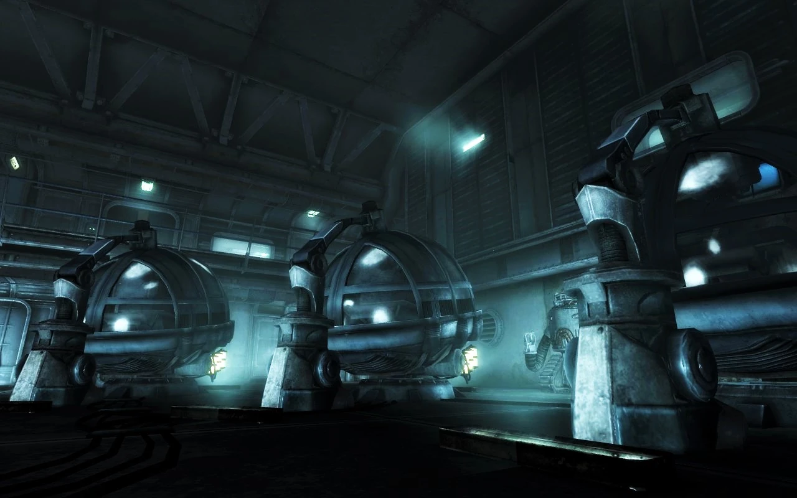
居住者は全員トランキリティ・ラウンジャーの中にいるため人間が施設を維持することができず、Vault 112は代わりに特殊な管理用ロボブレインのグループによって維持されている。
ロボブレインは非敵対的であり（攻撃しても敵対しない）、戦闘抑制装置も搭載していない。
プレイヤーキャラクターがVaultに入ると、到着が「予定より202.3年遅れている」と告げられる。
Vault 112実験の不定の期間に対応するため、Vaultは地熱発電のみを使用している。
これはSure Power社の地熱ユニットとX-Tra Sure Power社の地熱ユニットのバックアップによって供給されている。
メインホールにはThink Machine 3600rメインフレームが設置されている。
通常のVaultコンピュータシステムの機能に加え、シミュレーション制御コンピュータとして機能し、メインのシミュレーション・プログラムを実行し、すべてのトランキリティ・ラウンジャーを同期させている。
ロボブレインによって維持されていること、そして他の多くのVaultよりもうまく隠されていることから、Vault 112はキャピタル・ウエイストランドでVault 101以外に唯一無傷で残っているVaultである。
この特定の実験の結果は曖昧である。
ブラウンがシミュレーターを設計した際にサディスティックな衝動を満たすことだけを意図していたのなら、その目的は完全に達成された。
一方、住民たちが永遠に生きるためのバーチャルな楽園を真摯に作ろうとしていたのであれば、その後、神のような立場が彼を狂気に陥れ、他の住民の存在を永遠の地獄にしたという事実は、実験が失敗だったことを意味する。
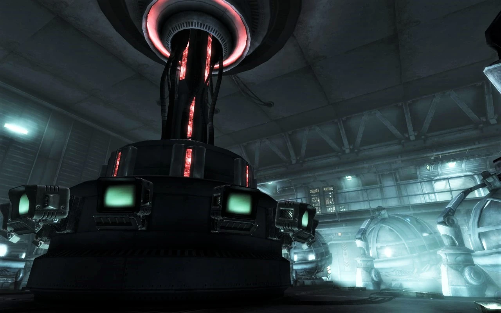
注目のルート
- 監督官の部屋のパスワード — 倉庫室にある。
ノート
- Vault 112はFallout 3で放射線や敵対的なミュータント・クリーチャーの影響をまったく受けていない唯一のVaultであり、さらにロボブレインを使用している。
ロボブレインを持つもう一つのVaultはFallout 4のアドオン Far HarborのVault 118である。 - Vault 112のジャンプスーツは、ローン・ワンダラーが最初に遭遇するロボブレインと、メインフロア上のキャットウォークからアクセスできる部屋からのみ入手できる。
- ロボブレインは、Vaultを最初に訪れた時期に関係なく、ローン・ワンダラーが「予定より202.3年遅れている」と述べる。
2277年に訪れた場合、Vault 112は大戦の2年前の2075年に封鎖されたことになる。 - メインホールの13基のラウンジャーのうち、使用中なのは10基のみ。
1基は故障しており、残りの2基はローン・ワンダラーとその父がシミュレーションに入るために使用される。 - メインホールのラウンジャーモニターは操作可能。
一部は被験者の情報を表示し、例えばオールド・レディ・ディザーズは「一貫性のない読み取り値」と「異常」を示す。 - ロボブレインを攻撃しても敵対しないが、破壊するとカルマを失う。
1体を破壊すると他の2体が意識不明になる。 - Vaultのコンテナは安全に保管に使用できる。
- このVaultは、元の居住者またはその子孫がまだ住んでいることが知られている数少ないVaultの一つ。
他にはVault 101、Vault 8、Vault 34（フェラル・グール化しなかった住民はわずか4人）、Vault 21、Vault 81、Vault 84、Vault 118がある。 - シタデルのマップにはVault 112は表示されない。
同様に、Vault-Tec本社のメインフレームのVaultリストにもマップ上にマークされていない。 - 85名を収容可能とされているが、ラウンジャーは13基しかなく、そのうち3基はジェームズ到着前には使用されていなかった。
- ドクター・ピンカートンのジャーナルの一つには、このVaultからメモリチップを盗み出し、ハークネスに「人生」の記憶を与えるために使用したと記されている。
- Fallout: New Vegasでは、ヒドゥン・バレーとネリス空軍基地にトランキリティ・ラウンジャーが見られる。
登場作品
Vault 112はFallout 3にのみ登場する。
舞台裏
- レベルデザイナーのジェシー・タッカーがVault 112の作成とレイアウトを担当した。
ギャラリー
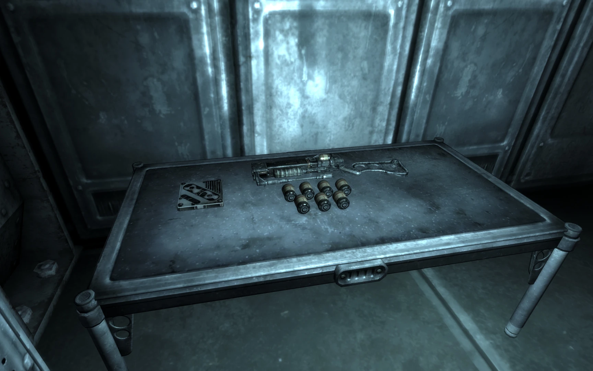
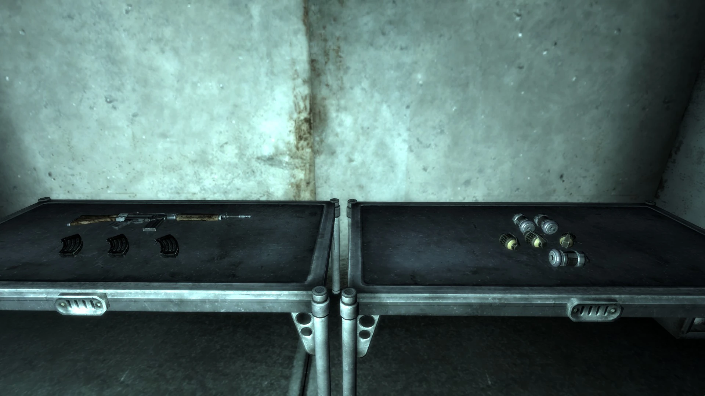
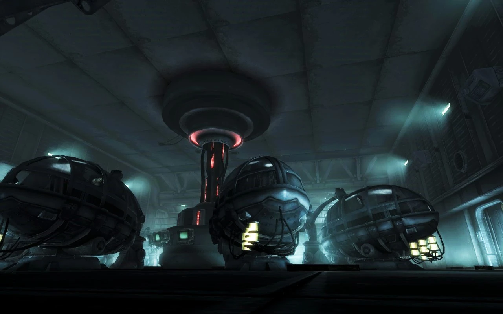
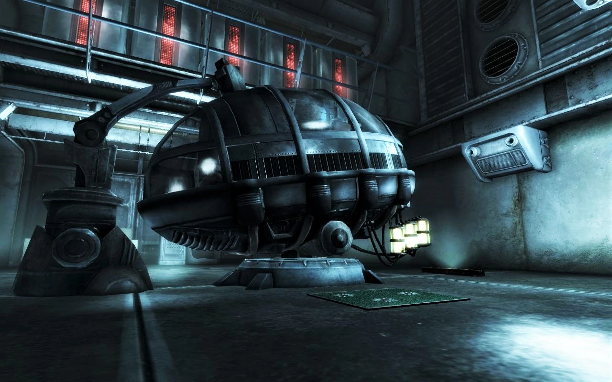
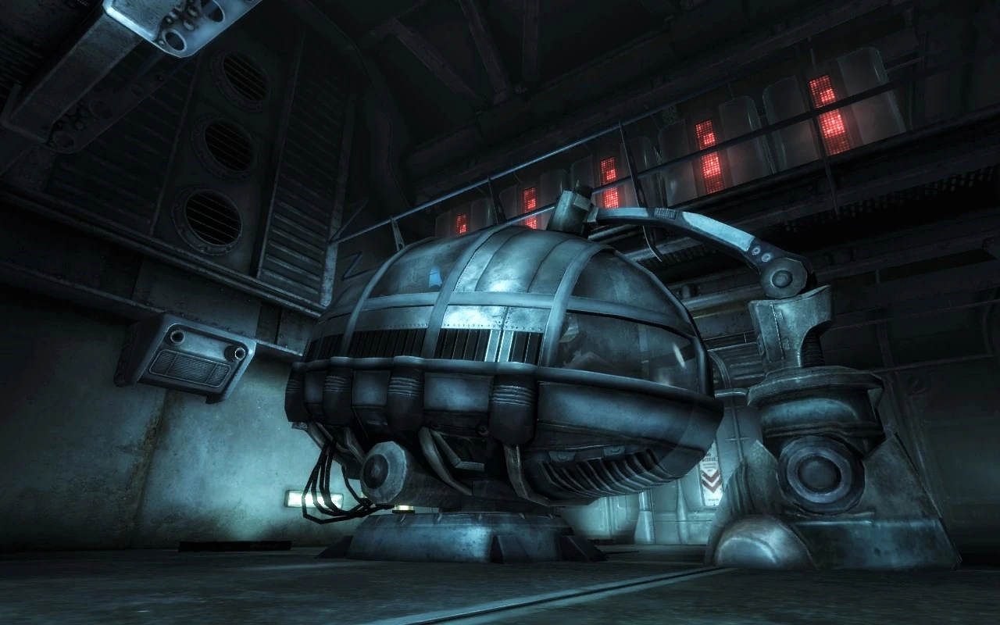
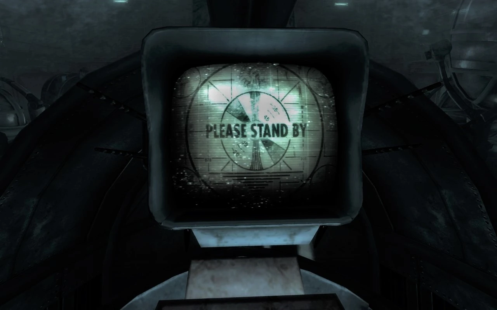
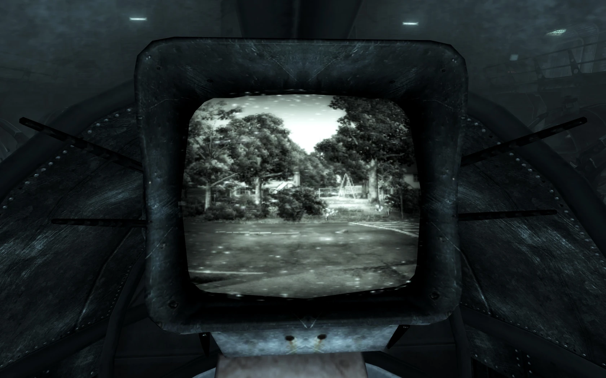
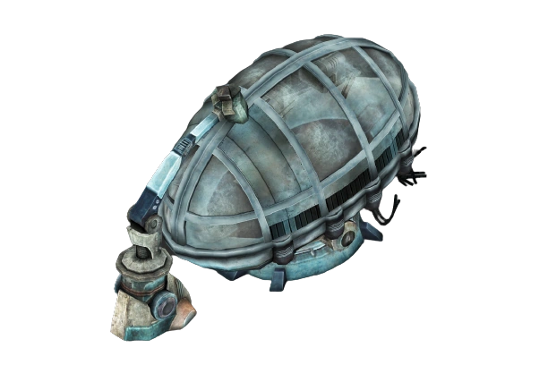
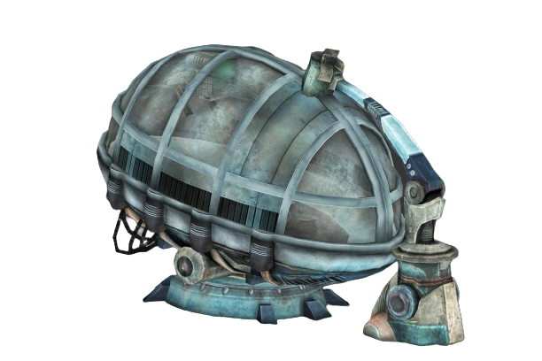
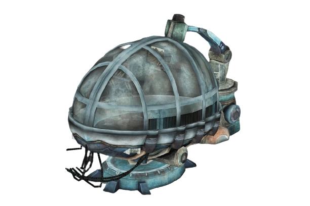
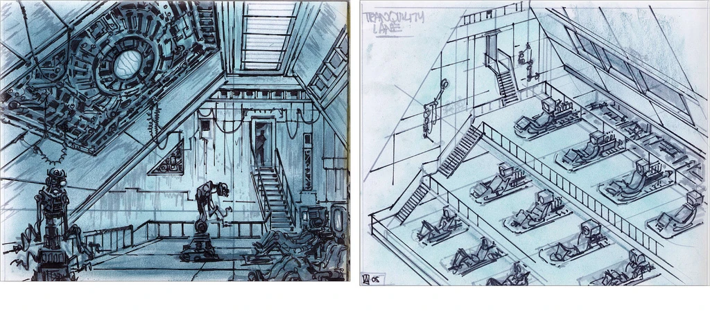
Vault 112は、Fallout 3のメインクエストの中でも最も記憶に残るロケーションの一つじゃないかなと思います。
スミス・ケイシーのガレージの床からVaultに入っていく流れ、ロボブレインに「202年遅れています」って言われるあの瞬間、そしてラウンジャーに横たわる200年以上眠り続けた人々…全部が異質で引き込まれるんですよね〜。
Vault実験の設計思想として見ても興味深くて、住民をバーチャルリアリティの中で「永遠に幸せに暮らさせる」というのは、Vaultの実験の中でも最も穏やかに聞こえる反面、その支配者がスタニスラウス・ブラウンというサイコパスだったせいで「永遠の地獄」に変わってしまったっていうのが何とも皮肉です。
ブラウンの監督官オフィスに専用のラウンジャーがあるっていうのもまた、彼の特権意識と支配欲を物語っていて、設計レベルで組み込まれた恐ろしさを感じます。
ロボブレインがメンテナンスを担当しているおかげで、キャピタル・ウエイストランドで唯一無傷のVault（Vault 101を除く）っていうのもすごい。
200年以上、ロボブレインだけで施設を完璧に維持し続けたっていう技術力と、それでも中の人間たちは「玩具」にされているっていう対比がFalloutの世界観を濃縮している感じがします。
Fallout: New Vegasでもトランキリティ・ラウンジャーがちらっと登場するのもファンとしては嬉しいポイントですね〜！
This article was created by translating and editing Vault 112 from Nukapedia: The Fallout Wiki.
Licensed under the Creative Commons Attribution-Share Alike License (CC BY-SA 3.0).
コミュニティ維持のため、寄付を受け付けております。
> COMMENTS